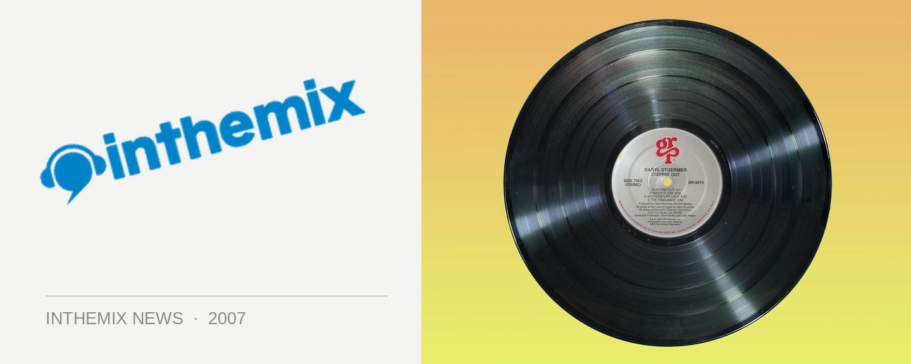

Stephan Bodzin lands in October
Stephan Bodzin is one of the hottest names in minimal at the moment, having worked with Thomas Schumacher, Oliver Huntemann and Marc Romboy before striking out on his own in 2005. He’s got his debut album out on the shelves and he’ll be here in October for a series of club dates.
In addition to his work with the above mentioned names in techno, Bodzin has remixed the likes of Depeche Mode, Booka Shade and The Knife and his releases can be found on labels like Get Physical, Datapunk, Gigolo, Systematic and Giant Wheel.
Drawing his inspiration from a heritage that came from being the son of an experimental musician and being exposed to music fro man early age, in 2006 he started his own label Herzblut to help get his music out there. The culmination of his last couple of years of work, his debut album Liebe Ist… was released in May.
Catch Stephan Bodzin at the following dates…
Oct 5th: Empire, Brisbane
Oct 6tyh: Electric Circus, Adelaide
Oct 7th: Elsewhere, Goldcoast
Oct 12th: The Likes of You (POW), Melbourne
Oct 13th: Chinese Laundry, Sydney